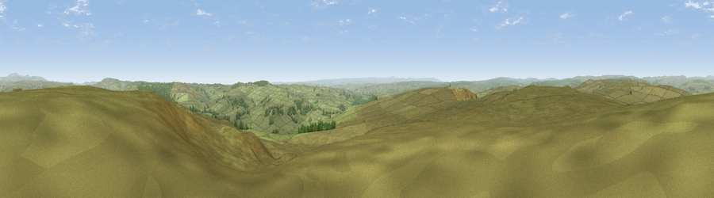

Viewpoint near West Woodburn
#5356 in England · top 10% of its area beats it · near West WoodburnThe view, rendered

A 360° render of this exact spot computed from the terrain model, tree cover and land cover — summer colours, afternoon light, calibrated against photographs of famous viewpoints. Real trees, hedges and buildings will differ in detail.
The panorama
Grey silhouette: terrain skyline in each direction (720 bearings, Earth curvature and refraction included). Dashed green: skyline with trees (+15 m) and buildings (+8 m) as obstacles. Blue strip: how far the ground is visible on each bearing.
Where the view opens
Wedge length = distance to the farthest visible ground on that bearing (vegetation-aware). Rings at 10, 25 and 50 km.
What fills the view
91% grassland · 9% woodland
Angular shares of the visible panorama (visual magnitude), not map area. Landscape diversity 0.14 (0–1 Shannon).
Key numbers
More beautiful places nearby
The staircase of upgrades: each row has a higher view potential than everything closer. Driving times are estimates from straight-line distance, calibrated against real road routing — check an actual route before setting out.
| Place | Direction | Drive | Score |
|---|---|---|---|
| Viewpoint near West Woodburn | ENE · 1 km | ~2 min | 70.4 |
| Hart Side | E · 6 km | ~13 min | 71.0 |
| Padon Hill | NW · 7 km | ~14 min | 72.6 |
| Viewpoint near West Woodburn | ESE · 7 km | ~15 min | 73.4 |
| Darden Rigg | NE · 15 km | ~27 min | 77.0 |
| Ellis Crag | NW · 18 km | ~31 min | 77.2 |
| Viewpoint near Hepple | NE · 19 km | ~32 min | 82.4 |
| Viewpoint c12273_7856 | NNE · 26 km | ~42 min | 83.7 |
55.18587, -2.21474 · source: screening · position refined by local search. Computed location — check access rights before visiting.